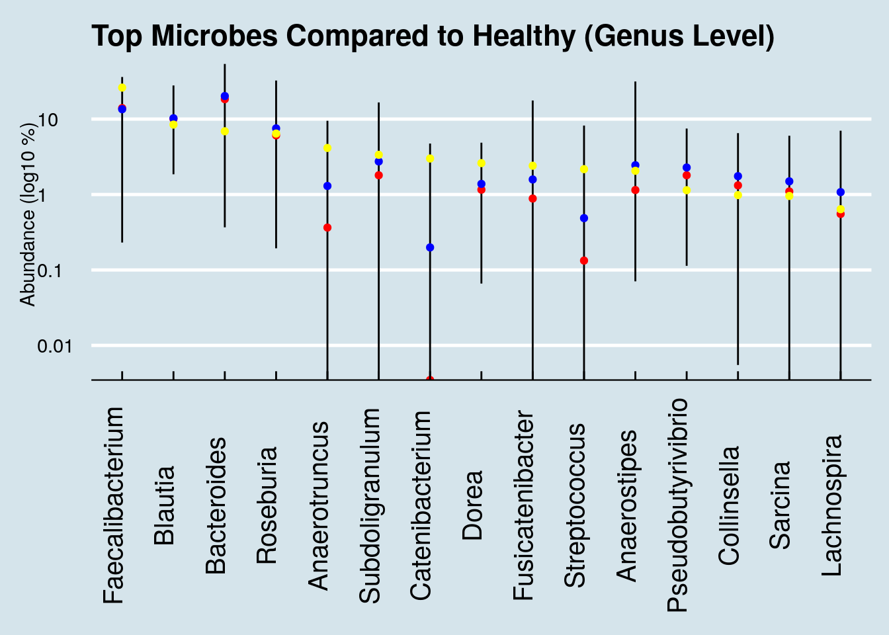
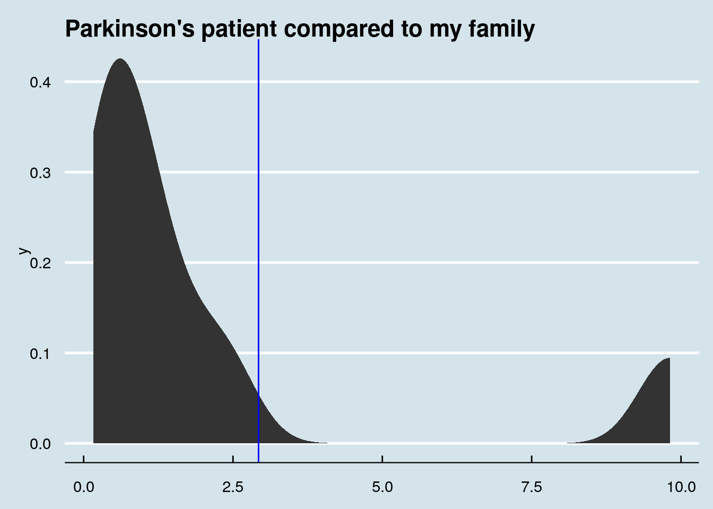
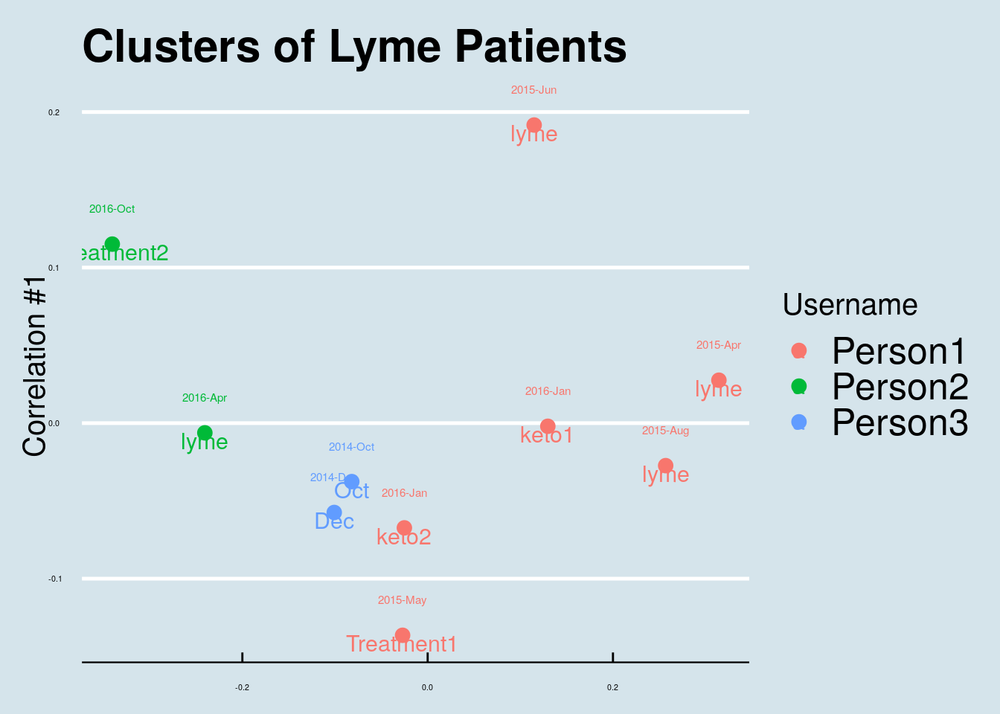

14 Case Studies
Hundreds of people have sent me their microbiome results. Here are some examples showing how I walk through specific cases.
14.1 Healthy People
Healthy people are all alike; every unhealthy person is unhealthy in their own way. - Leo Tolstoy Anna Karenina.
A statistically-generated NMDS diagram is an easy way to show hundreds of samples at one time. Samples that are more similar to one another are shown closer together, forming “clusters” that can give us an idea of which people are most similar. (Figure 14.1)
The differences here are not strikingly obvious, but you can see a cluster among the baby samples. There is overlap, but it appears that the healthy people are generally in a separate space from the people who self-report some type of dysbiosis.
What if we look just at the “healthy” people? In Figure Figure 14.2 I unfortunately don’t see any special clusters.

14.2 Family members
My father and I live in different parts of the country: he’s in the Midwest (where I grew up) and I’m on the West Coast. We’re both healthy omnivores and, other than a couple-decade age difference we both eat roughly similar foods and have similar medical histories.
That said, I was surprised to see our gut biomes were so similar. Here’s how I did the comparison.
Remember that a gut microbiome varies a lot day-to-day, depending on whatever food we happened to eat, exposure to illness, geographic location, even time of year. To keep the variables as constant as possible, I’ll compare two samples taken on the same day:
| Me % | Dad % | |
|---|---|---|
| Firmicutes | 53.82 | 46.44 |
| Bacteroidetes | 19.80 | 37.50 |
| Verrucomicrobia | 16.80 | 2.44 |
| Actinobacteria | 6.65 | 0.91 |
| Euryarchaeota | 4.78 | 0.02 |
| Proteobacteria | 1.79 | 12.43 |
At the highest, phylum, level, we can see the percentage abundances look different. One easy way to spot specific patterns is through a heatmap, like this one:

Here are some of the taxa that are unique to me:
| Me (%) | |
|---|---|
| Pyramidobacter | 0.42 |
| Dialister | 0.38 |
| Cloacibacillus | 0.32 |
| Methanomassiliicoccus | 0.09 |
| Gordonibacter | 0.04 |
| Hydrogenoanaerobacterium | 0.04 |
| Mogibacterium | 0.02 |
| Megasphaera | 0.01 |
| Sporobacter | 0.01 |
| Acidaminococcus | 0.01 |
Taxa found in my father but not in me.
| Me Species(%) | |
|---|---|
| Bacteroides plebeius | 2.38 |
| Odoribacter laneus | 1.04 |
| Dialister propionicifaciens | 0.37 |
| Butyricimonas virosa | 0.29 |
| Anaerotruncus sp. NML 070203 | 0.21 |
| Parabacteroides johnsonii | 0.20 |
| Bacteroides salyersiae | 0.19 |
| Collinsella sp. GD3 | 0.09 |
| Roseburia hominis | 0.06 |
| Gordonibacter pamelaeae | 0.04 |
Taxa found in my father but not in me.
The list includes the familiar Bacteroides plebeius, the “seaweed-digesting” microbe which we’ve discussed previously. Dad never lived in Asia, so this is not a surprise.
and some that Dad has that I don’t:
| Dad (%) | |
|---|---|
| Paraprevotella | 1.30 |
| Butyrivibrio | 0.39 |
| Robinsoniella | 0.15 |
| Citrobacter | 0.07 |
| Catenibacterium | 0.05 |
| Arthrobacter | 0.02 |
| Parvibacter | 0.02 |
| Brevibacterium | 0.01 |
| Holdemania | 0.01 |
| Campylobacter | 0.01 |
| Dad Species (%) | |
|---|---|
| Desulfovibrio piger | 2.50 |
| Akkermansia muciniphila | 2.17 |
| Sutterella stercoricanis | 1.50 |
| Alistipes putredinis | 0.92 |
| Sutterella wadsworthensis | 0.65 |
| Phascolarctobacterium sp. 377 | 0.34 |
| Paraprevotella clara | 0.21 |
| Bacteroides clarus | 0.18 |
| Collinsella aerofaciens | 0.07 |
| Parabacteroides goldsteinii | 0.03 |
That Thalassospira is a mystery. A quick literature search reveals nothing, but it’s abundant enough to make me wonder if there’s something special about Dad’s lifestyle that would harbor it. Note that it’s not visible on the species level, an indicator that nothing is known below the genus.
I tried to esimate, roughly, how common it is among the other samples I’ve seen: It ranges between zero and 10.1979
The vast majority of samples have none, but it’s not unknown either:

Since Dad has already submitted several samples, I can also check whether and how much he has in his other samples:

The answer is that he has some in all of his gut samples. This particular one was unusually high, but without more data it’s hard to tell if that’s significant.
14.2.1 My sister
Now let’s compare myself with my sister. She made two samples (A and B), but the first thing we note is how different they are from each other. Despite being taken a month apart, they look significantly different.
| A | B | |
|---|---|---|
| Firmicutes | 39.74 | 60.61 |
| Bacteroidetes | 30.89 | 34.30 |
| Actinobacteria | 17.12 | 2.41 |
| Verrucomicrobia | 9.82 | 0.17 |
| Synergistetes | 1.24 | 0.40 |
| Proteobacteria | 0.90 | 2.08 |
Sample A is the oddball, with unusually low Firmicutes than Sample B, and different from both me and our father, despite eating roughly the same diet. Can we try to undersand what’s driving the difference? Let’s look at the genus level:
| A | B | |
|---|---|---|
| Bacteroides | 10.27 | 16.29 |
| Porphyromonas | 9.91 | 0.00 |
| Akkermansia | 9.82 | 0.17 |
| Anaerococcus | 8.81 | 0.00 |
| Varibaculum | 7.73 | 0.01 |
| Corynebacterium | 6.11 | 0.00 |
| Peptoniphilus | 5.96 | 0.00 |
| Blautia | 1.85 | 8.43 |
| Faecalibacterium | 0.67 | 21.13 |
| Roseburia | 0.19 | 13.53 |
Aha! the Porphyromonas is the giveaway. That taxa almost never appears in a gut sample. In fact, of the hundreds of samples I’ve studied, it was nearly zero in all but the gut samples. I think we can safely assume that my sister’s sample A was contaminated somehow.
Finally, let’s make one big comparison among all my family members
| Me | Dad | Sister | Daughter | |
|---|---|---|---|---|
| Akkermansia | 16.74 | 2.35 | 0.17 | 0.88 |
| Faecalibacterium | 12.81 | 16.84 | 21.13 | 32.95 |
| Bacteroides | 11.82 | 17.89 | 16.29 | 22.70 |
| Sarcina | 7.72 | 2.03 | 0.30 | 1.57 |
| Blautia | 6.39 | 3.26 | 8.43 | 8.40 |
| Bifidobacterium | 5.60 | 0.03 | 1.37 | 4.21 |
| Roseburia | 3.93 | 6.73 | 13.53 | 9.80 |
| Subdoligranulum | 3.26 | 1.26 | 2.51 | 4.12 |
| Barnesiella | 1.91 | 3.82 | 0.90 | 0.04 |
| Alistipes | 1.75 | 1.85 | 2.42 | 2.54 |

Presented this way, a few items stand out:
My daughter is very different from the rest of us, missing whole classes of microbes. Like me, she is missing Paraprevotella.
Dad’s low Bifidobacterium, probably a function of age, may explain some of his sleep troubles. Fortunately he has some Bifido, so I’m optimistic that with the right diet he may be able to increase his levels. My sister, who complains of poor sleep too, has low Bifido as well, but again the good news is that it’s not zero: she has something to work with.

14.3 Alzheimers and the microbiome
“Anne” is a 40-year-old mother with a secret: her 23andme genetic test results show she is homozygous for the APOE-4 variant, which in slightly-misleading-but-you-know-what-I-mean everyday language means she has the gene for Alzheimer’s disease. Statistics show that about 80% of people like her will develop the condition, and with this particular gene variant, it’s likely she may start to see early symptoms as soon as age 50. Scary! No wonder she doesn’t want anyone to know, including her children and relatives.
But Anne is also an optimist: she prefers to see herself as one of the 20% with the gene who won’t develop any symptoms. And she’s ready and motivated to do whatever necessary — diet, exercise, lifestyle changes — to beat this thing. She also knows that her body includes much more than human DNA, that for every human gene like that APOE-4 variant, she is host to as many as ten or a hundred times as many microbial genes, including — perhaps — some that with a bit of nurturing might help offset or prevent whatever propensity her human DNA has to this terrible disease.
Scientists researching Alzheimer’s disease have uncovered some intriguing relationships with the microbiome. (see this recent New York Times article for a summary.) Some early AD symptoms, like a loss of smell, may be clues that the brain has been attacked by something that came from outside. The microbiome of the mouth, especially, is an excellent hiding place for low-grade infectious agents thanks to its many dark corners with regular access to both the inside and outside of the body1 . After reading about these relationships, Anne submitted several oral samples and shared the results with me.
The AD research field has blossomed lately with the realization that the brain, once thought to be completely sterile, is home to many microbes. This discovery and additional research has excited the editors of the respected Journal of Alzheimers Disease, who concluded a recent issue2:
We propose that infectious agents, including HSV1, Chlamydia pneumonia, and spirochetes, reach the CNS (Central Nervous System) and remain there in latent form. These agents can undergo reactivation in the brain during aging, as the immune system declines…The consequent neuronal damage… occurs recurrently, leading to (or acting as a cofactor for) progressive synaptic dysfunction, neuronal loss, and ultimately Alzheimers Disease.
That’s a powerful indictment of specific microbes, and the article calls them out by name. So does Anne have any in her sample?
Unfortunately, here’s where we see both the promise and the limitations of those of us who suspect the microbiome will play an important role in eventually conquering this terrible disease.
The promise is intriguing: if we could identify the specific microbes underlying the condition, and then, perhaps through antibiotics or probiotics or some other intervention, what if we could get rid of the “bad” microbes and reseed with the “good” ones?
Here’s a high-level (phylum) look at Anne’s oral microbiome:
| 1 | 2 | 3 | |
|---|---|---|---|
| Firmicutes | 70.27 | 42.45 | 59.58 |
| Bacteroidetes | 14.69 | 13.62 | 5.84 |
| Verrucomicrobia | 8.36 | 0.00 | 0.00 |
| Euryarchaeota | 7.58 | 0.00 | 0.00 |
| Actinobacteria | 5.45 | 3.72 | 0.37 |
| Proteobacteria | 1.96 | 36.74 | 28.84 |
| Synergistetes | 0.12 | 0.00 | 0.00 |
| Fusobacteria | 0.01 | 4.23 | 1.09 |
| Candidatus Saccharibacteria | 0.00 | 0.08 | 5.11 |
| Spirochaetes | 0.00 | 0.01 | 0.02 |
Careful readers will immediately notice the Spirochaetes in those two later samples – the same microbe identified as a suspect in the Journal of Alzheimer’s Research. Is this just a coincidence?! Or have we found a link?
At this point, (big groan), we know there are quick-buck charlatans out there who will seize on an observation like this to sell hope to Alzheimer’s sufferers and their families: how about a new anti-Spirochetes supplement? A seven-step “detox” plan to permanently rid your system of Spirochetes? Great idea for a new business, or maybe a best-selling book, right?
Unfortunately there are no shortcuts, and real conclusions from this data are still a ways away.
It turns out that Spirochetes is actually quite common in the oral microbiome. It’s a broad category of free-moving bacteria that like to hide in low-oxygen environments. Its most infamous members include the genus Troponema, associated with syphilis, which come to think of it is a disease that affects the brain. (In botany class they like to joke that it’s called Spirochaete because that’s what you get when you cheat).
The Spirochaetes in Anne’s test results are not Troponema, but even if they were it wouldn’t mean much. A lot of people have these. I have some in my own mouth microbiome. The ecology of the mouth is so rich and complex that it’s almost never possible to identify something as either “bad” or “good”. Remember the example from earlier of “viridans” streptococci, the ones that beat back Strep Throat but can also cause heart problems?
The same is likely to be true about whatever microbes might be involved with Alzheimer’s. But the good news is that more sampling can play a role in helping to narrow down the microbes that are different in people who go on to develop the disease. If we can collect enough samples from people like Anne, who have a family history and are at high risk for AD, we can compare them to one another as well as to thousands of samples of people who are normal risk and maybe we’ll see a pattern.
For example, when Anne compared her mouth biome results with those from a close relative, she found that she has these unique phyla. The relative does not have them:
| Anne’s Unique Phyla | % diff |
|---|---|
| Candidatus Saccharibacteria | 0.08% |
| Spirochaetes | 0.01% |
| Tenericutes | 0.00% |
Interestingly, this relative has none of her Spirochaetes. And we find two others missing as well. Do they matter? Who knows?
The microbiome studies that have been conducted so far on AD patients are too limited to offer suggestions for what Anne can do right now, but slight differences like this offer her some ideas for possible experiments in the meantime.
Anne already follows the general advice that doctors give to everyone, including those at risk of AD, who wants a healthy microbiome: get plenty of exercise and sleep, eat healthy unprocessed foods, and avoid antibiotics. But, just possibly, there are variations on these general good habits that might help her today.
For example, she’s experimenting with different toothpastes to see how that affects her mouth microbiome. Did you know that most of the common toothpaste brands include powerful antibiotics?3 Could the difference in brand be responsible for the unique phyla she sees? To learn more about herself, she’s experimenting with alternate brands – testing her oral microbiome before and after to see the effects.
This is not the end of the story. Sadly we don’t know what will ultimately happen to Anne. But through better knowledge of herself, and her microbiome, she’s doing everything she can to beat the odds.
14.4 Colorectal Cancer
Paul was a pretty normal father of two teenagers when he noticed something odd in the bathroom. At first he thought it was something he’d been eating; despite a lifetime of Southern living, he didn’t have as much tolerance for deep-fried cooking as some of his neighbors and the past few weeks had been unusually heavy on the grease. So, he laid off the french fries for a few weeks and it seemed to get better. He had enjoyed a lifetime of perfect health: he was rarely sick, had never been inside a hospital except to visit others, and fully expected to live well into his 80s or 90s like his grandparents.
He wasn’t worried, but a few months later his wife reminded him that his company insurance plan includes a free annual physical, and he thought why not. The doctor didn’t seem worried either, but suggested a few more tests “just in case”, and unfortunately that’s when he got the diagnosis that has been on his mind every day since: Stage IV colorectal cancer that has spread to his liver.
If you or a loved one find yourself in tragic situation like this, your first stop should always be with a medical professional. Paul’s oncologist studied this full-time for years of medical school, has treated tens of thousands of cancer patients for 30 years, and gets paid to stay up-to-date on the latest science while interacting with other professionals like him. So it’s beyond silly and arrogant – not to mention dangerous – to ask the opinion of an untrained amateur like me.
But still. Nobody, not even the most caring and selfless doctor, feels the urgency of the situation more than Paul and his family. They’ll try anything; and who can blame them? The same careful, methodical and well-informed approach that makes the mainstream medical profession more effective over the long term, well, maybe it also makes this doctor just slightly more risk averse. There are treatments that no responsible doctor would consider, but what exactly is a “responsible” treatment when you know that your odds are tragically small? Seriously, what’s there to lose?
Intriguing new discoveries have been made in the past few years about the relationship between cancer and the microbiome, and Paul asked if I know anything based on my years of near-daily sampling and amateur study. Might we find something in his microbiome, something that perhaps his doctor hasn’t thought to consider? Given all that’s known about microbiome-healthy diets, maybe if we found something unusual, some out-of-place microbe, is there a chance we might uncover a new, more effective treatment?

Many cancers seem to have a relationship with the microbiome. There are at least ten viruses which are known to be carcinogenic, including Human papillomavirus (HPV) that causes cervical cancer, and for which there is a vaccine. Some scientists guess that most cancers will eventually be shown to have their origins in a microbe, and although that’s mostly speculation at this point, the idea of using microbes to treat or prevent cancer has attracted interest for more than 100 years.
Fusobacterium nucleatum, Bacteroides fragilis, and many members of the large class of Enterobacteriaceae have well-studied characteristics that make them liable to cause the types of genetic damage that can give rise to cancer.
I repeat: I’m not an expert – I have no training or credentials in this at all – so please don’t take any of the following analysis as a substitute for the advice of a trained professional. Over the years, I’ve seen thousands of results from microbiome tests, including hundreds from people who claim to be healthy. We know for certain that Paul’s chances are uncertain – even with the best medical help in the world. Who can blame him for reaching out to anyone else who might have some insights? The obvious place to start is to look at how Paul’s microbiome sample may or may not differ from those healthy users.
Overall, I found his gut diversity is a little on the low side – a Shannon value of 1.2. I’m usually somewhere between 2.0 and 2.5, though it’s not uncommon to see lower, and there’s so much day-to-day variability in gut diversity that I wouldn’t take a single result very seriously.
Next I looked at the broadest, Phylum level, where I ranked all the microbes in comparison to the healthy samples, picking out the top ones that seem to be outliers. The following charts show the percentage abundance of Paul’s top microbes (yellow dots), compared to the average (blue dot) and median (red) for my database of healthy people. The vertical lines show the range of abundances I’ve seen in healthy people, so a yellow dot above or below that line is an outlier that’s worth considering further.

That high level of Proteobacteria is a clue that something’s not right. I’ve noticed that this microbe tends to be high in people with gut issues; Kluyvera, E. Coli, Shigella and most common pathogens are in this group. Now, this is only one test, and it’s not uncommon even in healthy people for the levels to show up high now and then. In my daily sampling, I’ve often had several results that high, including one or two at 25% for no apparent reason. Still, maybe it’s worth looking more closely, at the Order level:

Here we see way, way off-the-charts high levels of the order Xanthomonadales. These microbes take up 16% of his entire gut microbiome! Of the thousands of microbiome results I’ve studied, I see this bacterium from time to time, but never at such high abundances. Other than Paul, the most I’ve ever seen in my own gut came after returning from my 2-week camping trip in New Mexico, where my total was 0.00564. Paul’s is 2800x that amount.
Not sure what this means, but one version of that bacterium is a pathogen that lives in things like catheters; it’s usually harmless and goes away when you take out the catheter. Is Paul’s chemotherapy “port” involved?
Let’s look deeper, at the Genus level:

Here the one notable outlier is Catenibacterium. Intriguingly, the other people I’ve seen with such high levels are all unhealthy. One of them, like Paul, is undergoing chemotherapy. Is this a microbe that associates somehow with disease? And if so, is there anything he can (or should) do about it?
Ken Lassessen at https://cfsremission.com has compiled an extensive list of actions that can increase or reduce common microbes and he finds evidence that flaxseed oil is associated with reduced Catenibacterium. Is it worth trying? Ask your doctor.
Peer reviewed studies of colorectal cancer and the microbiome have singled out Fusobacterium. In fact, that microbe is so clearly associated that destroying it with the antibiotic metronidazole slows tumors in mice. There is none in Paul’s sample, either because his current cancer treatments have eliminated it, or because it just wasn’t detected in this sample.
New research shows that, at least in people with an inherited gene known to pre-dispose the likelihood of colorectal cancer, the gut microbiome can form a biofilm composed of slightly-mutated versions of two microbes: Bacteroides fragilis and Escherichia coli.5, neither of which is identifiable in Paul’s sample.
If you found some in your microbiome sample results, would that that mean you are at risk? The short answer is no. For what it’s worth, among the hundreds of samples people have sent me, B. fragilis ranges between zero and 4% in healthy people, and zero to 7% in unhealthy people. Pretty inconclusive at best; misleading and counter-productive at worst.
Researchers have found many other intriguing links between specific microbes and colorectal cancer, including a recent study hinting at an association with the oral microbiome: low abundance of Lachnospiraceae in the gut apparently allows some oral pathogens to get a foothold in the gut mucosa.6
Another study (Jacouton et al. (2017)) found that drug-induced colorectal cancer in mice could be prevented by feeding them a probiotic strain of Lactobacillus casei BL23. Although the research is unlikely to apply to humans, this particular strain is known to affect the immune system, producing a cascade of molecules that appear to change a rat’s response to cancer cells. For what it’s worth, Paul’s sample includes a bit of genus Lactobacillus and some Bifidobacterium too, though the test can’t tell the particular strain.
Are any of these microbial connections worth further investigation? Sadly, the chances are slim, but keep in mind that the best scientists on earth don’t know the answers either. It’s arrogant and patronizing to suggest that patients and their families should defer only to “real” scientists on these questions.
We need all the personal scientists we can get.
See more references about the links between the microbiome and cancer, two good places to start are: Garrett (2015) and Fulbright, Ellermann, and Arthur (2017)]
14.5 Ketogenic Diet
THIS IS A VERY EARLY DRAFT
What happens if you eat a very low-carb, high fat diet ?
One study finds higher levels of Akkermansia and Parabacteroides reduce production of gamma-glutamylation and modulate hippocampal GABA/glutamate ratios.7
Here is the microbiome of a person who tried Keto for several weeks.

Now let’s compare two people. The red line is the person above, who tracked their microbiome while beginning the diet; the blue line is a person who has been on a ketogenic diet for six months or so. Interestingly, the genus Parasutterella seems in unusually high abundance in both cases. Does it somehow relate to a low carb diet?

14.6 Parkinson’s Disease
THIS IS AN UNEDITED EARLY DRAFT. PLEASE DON’T RELY ON IT.
Parkinson’s disease is a devastating neurodegenerative disease that affects one in 100 people over age 60,
Although there is some evidence for a genetic component8, environment clearly plays a role as well – which of course, may point to microbes.
A 2017 review finds this:
Since 2015, six studies examining the gut microbiome in Parkinson’s disease (PD) have reported an increase in Akkermansia abundance in PD patients (e.g., Heintz-Buschart et al., 2017; Hill-Burns et al., 2017); indeed, elevated Akkermansia abundance appears to be the most consistently defining feature of the PD microbiome. Likewise, a 2017 study found elevated Akkermansia in individuals with rapid eye movement sleep behavior disorder, which is considered a pre-motor symptom of PD (Heintz-Buschart et al., 2017).
Is this observable in our samples?
“Patrick” is a confirmed Parkinson’s patient who sent me his microbiome test results. Let’s look first at the genus overall picture Table 14.1
| % | |
|---|---|
| Bacteroides | 37.90 |
| Roseburia | 9.84 |
| Blautia | 8.86 |
| Pseudobutyrivibrio | 7.43 |
| Alistipes | 7.18 |
| Parabacteroides | 3.89 |
| Akkermansia | 2.93 |
| Lachnospira | 2.64 |
| Dorea | 1.95 |
| Clostridium | 1.78 |
Microbes (genus-level) in a Parkinsons patient.
How different is Patrick’s Akkermansia compared to everyone else? Figure 14.4


How about me compared to my father and sister? (My brother, who I also tested, shows abundance of zero)

There are only 8 few samples involved here, and that one on the far right is just one of two from my sister and is therefore likely an anomaly. Still, if there were a big family component to this microbe, it certainly isn’t showing in this test. F
Let’s check the variability of my Akkermansia:
0% 25% 50% 75% 100%
0.000000 1.843725 4.010650 7.229650 37.161400 
As you can see, my levels are consistently quite high, and sometimes extremely high.
A May 2019 study of 62 million electronic health records showed a slight increase in Parkinsons among people who had appendectomies9, but smaller studies showed a slightly lower risk.
Hard to say…
14.7 Autism
What can we learn from the microbiome of a 4-year-old boy with Autism? A mother sent me the Explorer results of her 4-year-old, who suffers from Autistic Spectrum Disorder (ASD)
Here’s the overall picture of the phlyum-level microbes in his gut:
| ASD | |
|---|---|
| Firmicutes | 66.42 |
| Bacteroidetes | 27.68 |
| Actinobacteria | 3.00 |
| Proteobacteria | 2.89 |
| Verrucomicrobia | 0.01 |
| Euryarchaeota | 0.00 |
| Fibrobacteres | 0.00 |
| Lentisphaerae | 0.00 |
Looks quite normal, especially for somebody on an omnivore diet. Lots of Firmicutes and reasonable Actinobacteria. Proteobacteria is a smidge high, though not unusual for a single sample.
Let’s look at more details, down to the genus level, and compare him to some similarly-aged (healthy) kids:
| Girl | ASD | Boy | |
|---|---|---|---|
| Bacteroides | 46.31 | 26.84 | 37.78 |
| Blautia | 8.12 | 13.84 | 10.81 |
| Faecalibacterium | 1.56 | 13.22 | 20.23 |
| Roseburia | 3.28 | 11.38 | 1.60 |
| Anaerotruncus | 0.94 | 6.44 | 0.21 |
| Pseudobutyrivibrio | 1.57 | 3.22 | 0.30 |
| Subdoligranulum | 0.48 | 2.80 | 3.36 |
| Lachnospira | 0.44 | 2.30 | 0.10 |
| Collinsella | 0.36 | 2.10 | 0.98 |
| Anaerostipes | 1.15 | 1.91 | 4.02 |
| Sutterella | 0.07 | 1.83 | 0.00 |
| Dorea | 2.24 | 1.42 | 1.59 |
| Clostridium | 0.08 | 0.86 | 0.51 |
| Bifidobacterium | 0.61 | 0.79 | 0.00 |
| Parasutterella | 0.00 | 0.44 | 1.70 |
| Alistipes | 5.26 | 0.34 | 4.60 |
| Fusicatenibacter | 1.40 | 0.34 | 0.00 |
| Flavobacterium | 0.51 | 0.34 | 0.00 |
| Phascolarctobacterium | 2.32 | 0.29 | 0.79 |
| Flavonifractor | 2.48 | 0.11 | 0.16 |
| Thalassospira | 2.43 | 0.07 | 0.00 |
| Sarcina | 2.97 | 0.04 | 0.00 |
| Akkermansia | 2.88 | 0.01 | 0.00 |
| Barnesiella | 2.34 | 0.00 | 1.92 |
| Streptococcus | 0.01 | 0.00 | 0.54 |
Now, what about the autistic boy is unique? Let’s compare him to a similar-aged, healthy boy and see which microbes are present in the autistic case but not the healthy case:
| ASD | |
|---|---|
| Sutterella | 1.83 |
| Bifidobacterium | 0.79 |
| Fusicatenibacter | 0.34 |
| Flavobacterium | 0.34 |
| Odoribacter | 0.15 |
| Asaccharospora | 0.14 |
| Thalassospira | 0.07 |
| Slackia | 0.06 |
| Aggregatibacter | 0.05 |
| Sarcina | 0.04 |
| Eisenbergiella | 0.03 |
| Lactobacillus | 0.03 |
| Akkermansia | 0.01 |
| Finegoldia | 0.01 |
| Prevotella | 0.01 |
| Corynebacterium | 0.01 |
| Neisseria | 0.01 |
The autistic boy has Sutterella, an organism that is missing in the healthy boy.
How unusual is that level of Sutterella? I don’t have enough samples of healthy boys to do a real comparison, but just to get a rough idea of what we’re dealing with, here’s the range over a mix of 100+ health and unhealthy samples (mostly adults). The red line indicates where the autistic boy fits on the range of Sutterella abundances:

14.7.0.1 Microbes of known association with autism
Clostridium tetani may play a role in autism [ citation needed ], though unfortunately our 16S test can’t see this microbe. Instead let’s look for that microbe at the genus level:

Although obviously a single test can’t say much, he is not especially unusual for this microbe, at least at the genus level.
14.8 Exercise
I wanted to see if this paper is right in concluding that physically-fit women have lower Eubacterium. Here’s one physically-fit woman I know and sure enough, she has none of this microbe.
Other people I’ve seen who do have this seem to be either (1) older, or (2) on an unusual diet.
Here’s a summary of the ranges I see in healthy people

| Nov8 | diarrhea | |
|---|---|---|
| Faecalibacterium | 132088 | 159757 |
| Bacteroides | 124273 | 138547 |
| Blautia | 68357 | 151024 |
| Asteroleplasma | 55081 | 15192 |
| Dialister | 44186 | 12737 |
| Roseburia | 39761 | 66889 |
| Sarcina | 34326 | 7123 |
| Collinsella | 32053 | 18070 |
| Fusicatenibacter | 26337 | 10282 |
| Subdoligranulum | 24548 | 32277 |
| Sutterella | 24507 | 71739 |
| Catenibacterium | 24426 | 9578 |
| Lachnospira | 22221 | 4105 |
| Anaerostipes | 22207 | 24691 |
| Alistipes | 21965 | 17688 |
| Dorea | 21091 | 29480 |
| Bifidobacterium | 17862 | 1287 |
| Anaerotruncus | 16854 | 1650 |
| Thalassospira | 14553 | 442 |
| Parabacteroides | 13545 | 11731 |
| Akkermansia | 13531 | 8914 |
| Pseudobutyrivibrio | 11487 | 27910 |
| Clostridium | 11137 | 12858 |
| Flavonifractor | 10451 | 1147 |
| Flavobacterium | 5420 | 5956 |
Although these people are all healthy, it’s possible that those with Eubacterium are more active than those without. That’s an investigation for another day.
14.9 Lyme Disease
NOTE: THIS CHAPTER IS AN EARLY DRAFT
What can we learn about Lyme disease?
We know that Lyme disease has been linked to the pathogen Borrelia. The uBiome 16S pipeline doesn’t appear able to distinguish among the different species of that taxa, so let’s look at a higher level, the family Spirochaetaceae, which includes Borrelia. Several people with confirmed lyme disease sent me their samples, and indeed I do find some Spirochaetaceae in these samples, albeit at very low abundance.
I was unable to find any Spirochaetaceae in any of the other hundreds of samples I examined, including from a few people with confirmed lyme.

Let’s do an ordination. How do lyme patients resemble one another? Figure 14.6

This person tried Kefir to see if they could increase Fusicatenibacter:


See more here: https://www.semanticscholar.org/paper/The-microbiome-and-disease%3A-reviewing-the-links-the-Shoemark-Allen/89b2295bab63c6d9267dc29198cb829f452efb51?tab=citations ↩︎
Itzhaki et al. (2016) and here:https://content.iospress.com/articles/journal-of-alzheimers-disease/jad160152↩︎
Pischel et al. (2014), available here: https://www.ncbi.nlm.nih.gov/pmc/articles/PMC5781629/#!po=75.0000 ↩︎
I did see a level of more than 30% in one of my skin samples, again for no apparent reason (See more analysis).↩︎
As reported in the Feb 1 2018 edition of the New York Times based on research published in Science: Dejea et al. (2018)↩︎
see “Low colonic abundance of Lachnospiraceae favours colonisation of gut mucosa by oral pathogens linked to CRC” Flemer et al. (2017) ↩︎
See https://www.cleveland.com/news/2019/05/link-between-appendectomy-and-parkinsons-disease-is-possible-cleveland-study-shows.html↩︎